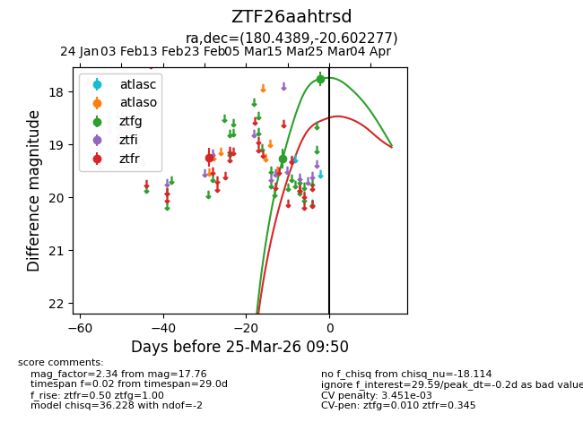
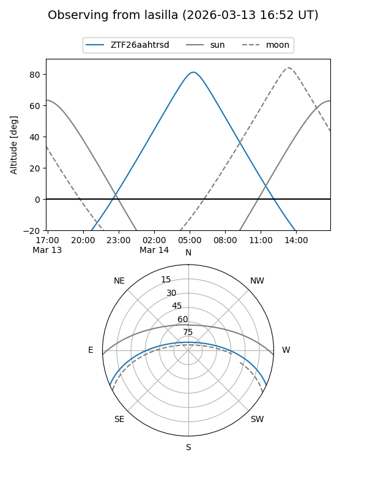
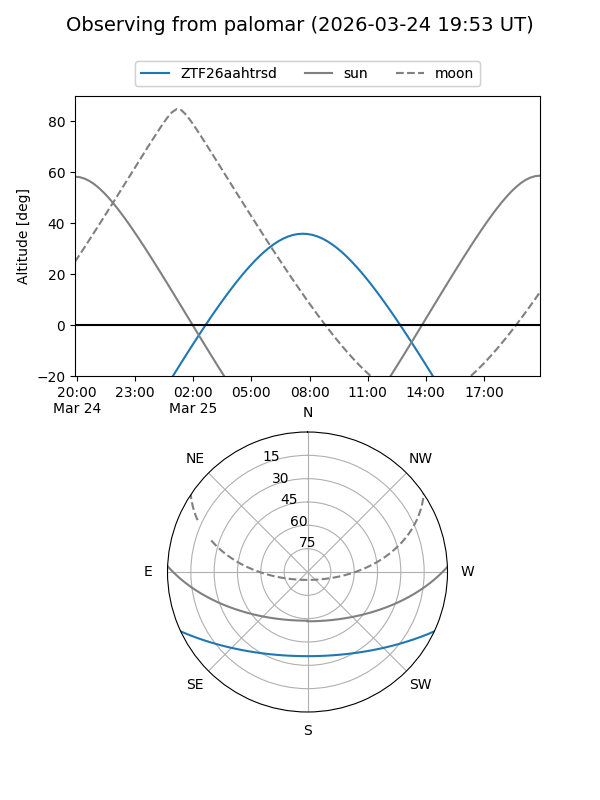
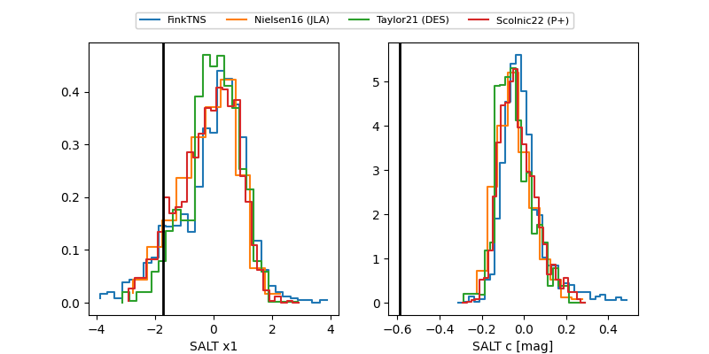

ZTF26aahtrsd
Target ZTF26aahtrsd at 2026-03-25 09:53
Aliases and brokers:
FINK: link
Lasair: link
ALeRCE: link
alt names
ZTF26aahtrsd (ztf,fink_ztf)
Coordinates:
equatorial (ra, dec) = 180.4389,-20.60228
equatorial (HMS+DMS) = 12:01:45.33,-20:36:08.20
galactic (l, b) = (287.5133,+40.77728)
Flags:
likely cv
Photometry:
last ztfg=17.76, ztfr=19.25
2 ztfg, 1 ztfr detections
Lightcurve

Visibility


Additional plots
